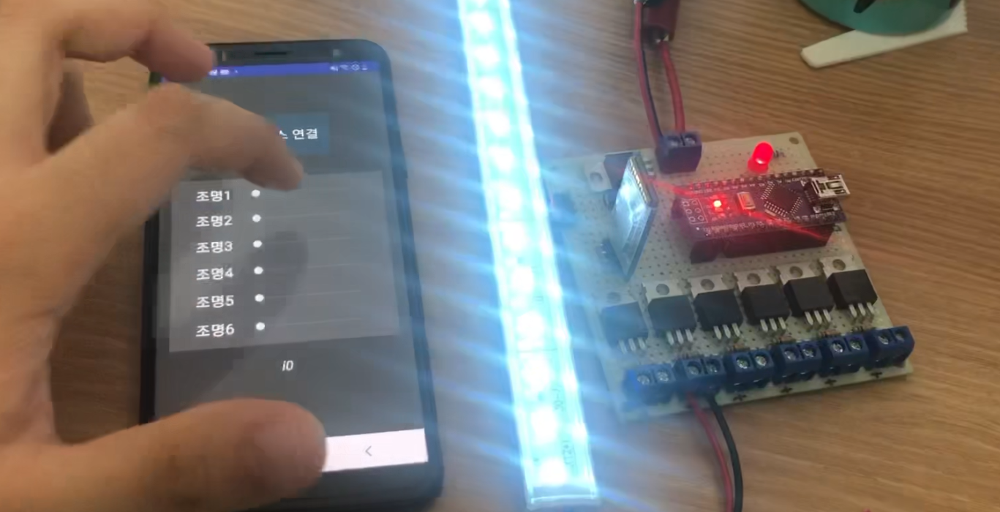

Education
광운대학교 졸업예정
2021.03 ~ 2027.02컴퓨터정보공학부 컴퓨터공학전공
경민IT고등학교 졸업
2018.03 ~ 2021.02디지털미디어과
Affiliation
광운대 성과관리팀
2026.03 ~ 현재광운대학교 교육혁신원 성과관리팀 행정 보조
광운대 전자연구회 (KITEL)
2021.12 ~ 현재광운대학교 중앙 학술동아리
22' 기술부장 | 25' AVR 세미나 강연
도돌이표 플라스틱
2020.11 ~ 2025.01플라스틱 분쇄/사출기 제작, 빗/블록/S고리/키링 모델링
의정부몽실학교
2021.03 ~ 2022.12공학 관련 HW/SW 프로젝트 2회, 모델링 교육 및 SW 교육 방과후 프로그램 4회 기획 및 운영
의정부드림메이커
2021.03 ~ 2022.086개 청소년 팀에 대한 HW/SW 개발 교육 및 멘토링
삼점일사 협동조합
2018.03 ~ 2020.03쓰레기통 결합형 DID에 탑재될 거점별 광고 플랫폼 SW 개발, Web 개발, HW 개발
Teams
Scout2Map
2025.12 ~ 현재졸업작품. 다중 센서 기반 환경 적응형 정찰 UGV와 SLAM 이벤트 맵 및 관제 시스템 개발
낭만돌고래
2025.06 ~ 2026.03전국 대회 출전. 반려식물 관리를 위한 모듈형 AIoT(AI + IoT) 솔루션 GreenEye 개발
도파민
2025.06 ~ 2026.03교내 대회 출전, 최우수/우수 수상. EEG를 통한 숏폼 컨텐츠의 위험성 분석
DG-Protector
2025.01 ~ 2025.04전국 대회 출전, 장려상 수상. 착용형 모터 제어 자세 교정기 개발
Bright
2021.03 ~ 2021.06교내 대회 출전, 우수상 수상. 점자블록 내장형 RFID 태그 신호등 신호알람 장치 개발
Dream Keeper
2019.06 ~ 2019.11도 대회 출전, 우수상 수상. 주변 정보를 함께 안내하는 DID 자전거 산책로 표지판
Certifications
GTQ 2급
2015년 취득리눅스 마스터 2급
2020년 취득정보처리기능사
2020년 취득임베디드기능사 (전자계산기기능사)
2020년 취득사물인터넷지도사
2021년 취득코딩지도사
2021년 취득소프트웨어교육지도사
2021년 취득Skills
Programming Languages
Microcontrollers
MCU Boards
Single Board Computers
CADs
Extra
Awards
Raw2Insight-Q: 실시간 엣지 AI 센서·액추에이터 오케스트레이션 시스템
실시간 엣지 AI 센서·액추에이터 오케스트레이션 시스템으로 출품해 대상을 수상했습니다.
프로젝트 상세 보기: Raw2Insight-QEEG를 통한 숏폼 컨텐츠의 위험성 분석
숏폼 시청 중의 EEG를 측정해 공개 데이터셋과 교차 검증한 분석 과제를 수행하고, 결과를 보고서로 정리했습니다.
프로젝트 상세 보기: EEG 기반 숏폼 콘텐츠 영향 분석EEG를 통한 숏폼 컨텐츠의 위험성 분석
위 분석 결과를 바탕으로 포스터를 제작해 부스 운영과 1분 PPT 발표를 진행했습니다.
프로젝트 상세 보기: EEG 기반 숏폼 콘텐츠 영향 분석착용형 모터 제어 굽은등 교정기
착용자의 자세를 감지해 모터 장력으로 교정하는 웨어러블 기기로 출품했습니다.
프로젝트 상세 보기: DG-ProtectorRFID 태그 방식의 횡단보도 음향 신호기
점자블록에 내장한 RFID로 횡단보도 음향 신호를 자동 토글하는 장치로 출품했습니다.
프로젝트 상세 보기: RFID 횡단보도 음향 신호기주변 정보를 함께 안내하는 DID 자전거 산책로 표지판
주변 상권·날씨·관광지 정보를 함께 안내하는 DID형 자전거 표지판으로 출품했습니다.
프로젝트 상세 보기: DID형 자전거 산책로 표지판Projects
졸업작품으로 진행 중인 자율주행 정찰 UGV입니다. 역할별로 MCU를 분리해, 주행 제어는 STM32F103에서 HAL·RTOS 없이 CMSIS 레지스터 레벨로 구현하고 쿼드러처 엔코더 기반 폐루프 속도 제어를 수행합니다. 엔코더 신호가 유실되면 런타임에 개루프로 자동 전환해, 야전에서 완전 정지 대신 성능 저하 상태로 임무를 지속하도록 설계했습니다. 제어 계층은 함수 테이블로 하드웨어를 주입받아 어떤 하드웨어 헤더도 참조하지 않으며, 덕분에 실물 보드 없이 호스트 PC에서 기구학과 PID를 단위 테스트할 수 있습니다. 환경 센서는 RP2350이 협조적 스케줄러로 수집해 USB CDC로 JSON을 흘려보내고, RPi5의 ROS2 브릿지가 이를 토픽으로 재발행합니다. SLAM 지도와 센서 이벤트는 rosbridge를 거쳐 React 관제 화면에 실시간 표시됩니다.
데이터 수집부터 이상 탐지, 하드웨어 제어까지 엣지 단에서 수행하는 관제 플랫폼입니다. Isolation Forest를 장치에서 직접 실행해 시계열 패턴의 이상 여부와 방향성, 이상 점수를 산출하고, 그 강도에 비례해 액추에이터 출력을 PWM으로 조절합니다. 센서별로 민감도를 조절하면 모델이 재구성되며, 디지털 센서는 ML 대신 규칙 기반으로 분기해 불필요한 연산을 피했습니다. BaseI2CSensor를 상속한 드라이버를 추가하면 신규 I2C 센서를 런타임에 확장할 수 있어, 웹 대시보드에서 핀과 프로토콜만 매핑하면 펌웨어 수정 없이 장치를 관제망에 편입할 수 있습니다. 카운터·타이머·래치·웹훅 등 가상 장치를 조합해 자동 제어와 알림을 구성합니다.
제작된 홈페이지의 컨텐츠를 관리할 수 있는 시스템을 외주 받아 작업했습니다.
기업의 연혁 및 포트폴리오, 일정 등 다양한 정보를 소개하는 페이지 제작을 외주 받아 작업했습니다.
마을 속에 있는 버려진 의자를 아카이빙하는 프로젝트로, 아카이빙 된 의자를 지도에 표시하고 그 외에도 참여자가 직접 찾은 의자를 추가할 수 있도록 하는 웹 페이지 개발을 외주 받아 작업했습니다.
숏폼 시청 중의 전두엽·후두엽 EEG를 측정하고, 공개 데이터셋인 GAMEEMO(정서 자극)와 OpenMIIR(음악 자극)을 동일한 파이프라인으로 처리해 지표를 교차 검증했습니다. 자체 측정만으로는 지표의 타당성을 담보하기 어렵다고 판단해 검증 축을 따로 둔 설계입니다. 트리거 채널에서 자극 시점을 검출해 에폭을 분할하고, 짧은 스파이크성 노이즈와 중복 이벤트를 걸러낸 뒤 Welch 방법으로 PSD를 산출합니다. Theta·Alpha·Beta 대역 파워에서 FAA(전두엽 알파 비대칭), FAP, OASI, TBR(세타-베타 비율) 네 지표를 계산하고, 영상 유형을 다섯 조건으로 나눠 조건 간 차이를 비교했습니다. 대역별 두피 분포도와 PSD 곡선을 시각화 산출물로 정리했습니다.
화분에 설치한 센서 단말이 생육 데이터와 이미지를 수집하고, 중앙 제어 유닛이 AI로 진단해 원격 제어까지 제공하는 AIoT 시스템입니다. ESP32-CAM 단말은 온습도·조도·토양 수분·EC를 측정한 뒤 즉시 Deep Sleep에 들어가는 저전력 구조로, NTP로 시간을 동기화해 야간에는 측정을 자동 중단합니다. 설치 시에는 WiFi AP로 전환해 웹 대시보드로 설정할 수 있습니다. 백엔드는 Docker Compose로 Flask·Mosquitto·InfluxDB·Redis를 묶어, 시계열 데이터는 InfluxDB에 적재하고 최신 상태는 Redis에 캐시해 API 응답을 단축했습니다. 질병 진단 모델은 ResNet50에 LoRA 파인튜닝과 K-Fold 교차 검증을 적용하고, 클래스 불균형은 Focal Loss로 완화했습니다. 고해상도 이미지는 타일 단위로 나눠 추론합니다.
자이로 센서로 상체 기울기를 감지하고 서보 모터로 밴드를 조여 자세를 교정하는 웨어러블 기기입니다. 착용 직후의 자세를 기준점으로 캘리브레이션한 뒤 편차를 감시하며, 좌·우 서보를 리미트 센서 피드백으로 독립 제어해 양쪽에 균등한 장력을 부여합니다. 통신 파싱·자세 판정·권취 제어를 세 개의 자체 라이브러리로 분리하고, 제어 명령은 자체 정의한 문자열 프로토콜로 주고받습니다. 경보음은 delay() 대신 millis() 기반 상태 머신으로 만들어 울리는 중에도 메인 루프가 멈추지 않으며, 모드 설정은 EEPROM에 저장해 재부팅 후에도 유지됩니다. Kotlin 안드로이드 앱에서 강도 제어와 착용 통계를 제공합니다.
사용자가 업로드한 사진과 작성한 글을 Database에 저장하고, 갤러리 형식으로 볼 수 있게 하는 웹 페이지 개발을 외주 받아 진행했습니다.
무작위로 떨어지는 막대기를 순발력으로 잡는 게임기를 개발했습니다.
관객으로 부터 음성을 받아 중요 키워드를 Parsing하고, 그 키워드를 취합해 글자구름(Word cloud)를 생성하여 화면에 출력해주는 프로그램을 개발했습니다.
특정 마술 연출을 위한 도구를 요청받아 개발했습니다. 이를 위한 하드웨어 및 소프트웨어를 설계하고 구현했으며 원격 제어를 위한 Bluetooth 중앙 제어기도 개발했습니다.
교육용 아두이노 보드를 개발하여 학생들이 한 장의 보드를 통해 전자회로 및 피지컬 컴퓨팅을 쉽게 배우고 실험할 수 있도록 하였습니다.
블루투스로 제어하는 한글 전광판과 전용 앱을 개발했습니다. 한글은 자모가 결합해 한 글자를 이루므로 완성형 폰트를 모두 담을 수 없어, 유니코드 값에서 초성·중성·종성을 역산해 조합형으로 렌더링했습니다. 받침 유무와 모음 형태에 따라 글자 폭이 달라지는 문제는 초성 8벌·중성 4벌·종성 4벌의 폰트 세트를 조합 규칙으로 선택하게 해 해결했고, 폰트 데이터는 PROGMEM에 상주시켜 제한된 SRAM을 절약했습니다. 패널 종류에 따라 두 가지로 구현했습니다. 단색 64x16 패널 버전은 라이브러리 없이 74HC138 디코더와 시프트 레지스터를 직접 구동해, Timer2 인터럽트에서 16행을 순차 스캔하며 포트 레지스터로 열 데이터를 밀어 넣습니다. RGB 패널 버전은 백버퍼에 직접 접근해 다색 출력과 스크롤을 처리합니다. 출력 문구와 스크롤 속도·방향은 EEPROM에 저장해 재부팅 후에도 유지됩니다.

원격 조명 제어 단말 | 다중 단말 제어 앱
6채널 조명을 MOSFET으로 제어하는 블루투스 단말과, 여러 단말을 등록해 관리하는 안드로이드 앱을 개발했습니다. 각 채널은 PWM으로 밝기를 개별 조절하며, 설정값은 채널별로 EEPROM에 저장해 전원을 껐다 켜도 마지막 상태가 유지됩니다. 제어 명령은 채널마다 지시자 문자 하나에 0~255 값을 붙이는 단문 프로토콜로 정의해, 파싱 부담 없이 즉시 처리되도록 했습니다. 입력 전압 감시 채널을 별도로 두어 앱에서 단말의 공급 전압을 조회할 수 있고, 명령 처리 후에는 수신 버퍼를 비워 다음 명령이 이전 잔여 바이트에 오염되지 않도록 했습니다. 앱은 여러 블루투스 단말을 리스트로 등록·관리해, 선택한 단말의 6개 조명을 개별 제어합니다.
일산화탄소 농도를 측정해 위험 단계별로 음성 경보를 출력하는 장치를 개발했습니다. Arduino 프레임워크 없이 ATmega128 레지스터를 직접 제어해 UART와 ADC를 구성했고, MQ 계열 센서의 저항비를 로그 관계식으로 환산해 ppm 값을 계산합니다. DFPlayer는 시작·버전·길이·종료 바이트가 고정된 10바이트 프레임을 요구하므로, 명령부만 채우고 체크섬을 계산해 전송하는 함수를 따로 만들어 음성 재생을 제어했습니다. 농도 구간을 안전·주의·위험 세 단계로 나눠 해당 트랙을 재생하며, 시리얼로 현재 농도를 함께 출력합니다.
분압 저항(30kΩ/7.5kΩ)으로 측정 범위를 확장한 전압계를 개발하고, 값을 블루투스로 스마트폰에 전송합니다. ATmega328P의 Timer0를 CTC 모드로 직접 설정해 100Hz 주기 인터럽트를 만들고, ISR에서 500회 누적 후 평균을 내보내 5초 간격의 안정된 값을 얻도록 했습니다. 폴링 대신 타이머 인터럽트를 쓴 덕분에 메인 루프를 비워둘 수 있었습니다.
8x8 DotMatrix를 연쇄 연결한 영어 전광판과 HC-06 기반 제어 앱을 개발해 배포했습니다. ASCII 폰트셋을 PROGMEM에 상주시켜 제한된 SRAM을 절약했고, 좌측 스크롤·밝기·스크롤 속도 조절과 EEPROM을 이용한 문구 저장 기능을 구현해 전원을 껐다 켜도 마지막 문구가 유지되도록 했습니다.
TM1637 4-Digit 7-Segment와 DS1302 RTC를 묶어 전자시계를 구성하는 라이브러리를 개발하고, Arduino 공식 Library Manager에 등록해 배포 중입니다. 두 모듈의 핀 배선만 생성자에 넘기면 displayTime, setBright, setNow 등의 메서드로 동작하도록 API를 단순화했고, 영문/한글 README와 예제 스케치, 데이터시트를 함께 배포했습니다.
RFID 횡단보도 음향 신호기
시각장애인이 횡단보도 음향 신호를 버튼 없이 작동시킬 수 있도록 만든 장치입니다. 기존 버튼 방식은 위치를 찾기 어렵고 누르는 동작 자체가 번거롭다는 점에 착안해, 점자블록에 RFID 리더를 내장하고 지팡이 끝에 부착하는 RFID 태그 단말을 함께 제작했습니다. 사용자가 점자블록 위에 서면 태그가 인식되어 음향 신호가 자동으로 토글되므로, 별도의 조작 없이 기존 보행 동선만으로 동작합니다. 지팡이 단말 하우징은 3D 모델링과 프린팅으로 제작했습니다.
배터리가 종지 전압에 도달하기 전에 릴레이로 부하를 분리하는 보호 장치를 개발했습니다. 분압 저항(30kΩ/7.5kΩ)으로 측정 범위를 확장하고, 타이머 인터럽트로 주기 측정한 값을 누적 평균해 순간적인 전압 강하로 오차단되지 않도록 했습니다. 용도와 단가를 고려해 두 가지 사양으로 나눠 제작했습니다. 보급형은 점퍼 4개 조합으로 11.4V·12.0V·12.6V·13.2V 중 하나를 고르고 상태를 LED로 표시하는 최소 구성으로, 설정을 하드코딩 대신 점퍼로 빼 배터리 종류가 바뀌어도 펌웨어 재작성 없이 대응할 수 있습니다. 상위형은 버튼 입력으로 차단 전압을 임의 지정하고 값을 EEPROM에 저장하며, OLED로 전압과 상태를 표시하고 DS1302 RTC를 더해 차단 시각까지 기록합니다. 자동·수동 모드 전환도 지원합니다.
주 배터리 전압이 종지 전압 아래로 내려가면 SSR로 보조 전원에 절체하는 장치를 개발했습니다. Timer0를 CTC 모드로 설정해 100Hz 인터럽트를 만들고, ISR 안에서 두 계통의 전압을 번갈아 샘플링합니다. ADC 채널을 전환한 직후에는 값이 안정되지 않으므로 사이에 더미 변환을 한 번 넣어 채널 간 간섭을 줄였습니다. 주 배터리 정상, 주 방전·보조 정상, 양쪽 모두 방전의 세 상태로 나눠 절체를 판단하며, 부팅 시 두 계통의 전압을 확인해 정상 범위에 들 때까지 대기하도록 해 비정상 상태에서 절체가 일어나지 않게 했습니다. 상태는 OLED에 표시하고 부저로 알립니다.
4핀(TRIG/ECHO)과 3핀(SIG) 초음파 거리 센서를 동일한 인터페이스로 다루는 라이브러리를 개발하고, Arduino 공식 Library Manager에 등록해 배포 중입니다. 생성자의 pinType 인자로 배선 방식을 흡수해 사용 코드를 바꾸지 않고도 센서를 교체할 수 있으며, 측정 주기와 단위(cm/inch)를 기본 인자로 처리해 호출부를 간결하게 유지했습니다.
ACS712 전류센서와 SZH-SSBH-043 전압센서를 하나의 클래스로 통합한 학습용 라이브러리입니다. 생성자의 type 인자로 센서 종류를 구분해 printVoltage/printCurrent 두 메서드만으로 사용할 수 있게 했고, 앞서 제작한 두 라이브러리와 동일한 배포 형식(library.properties, keywords.txt, 예제 스케치, MIT 라이선스)을 갖춰 구성했습니다. 각 센서의 데이터시트를 저장소에 포함해 배선 확인이 가능하도록 했습니다.
초음파 센서를 통해 손을 감지하면 연결된 서보모터로 문을 개폐해주는 쓰레기통을 개발하고, 결합된 DID를 통해 웹서버로부터 다운받은 광고 자료를 슬라이드쇼로 송출하는 사이트를 개발했습니다.
DID형 자전거 산책로 표지판
자전거 산책로에 설치해 주변 정보를 함께 안내하는 DID형 표지판입니다. 위치 정보와 지도 API를 기반으로 주변 상권, 날씨, 관광지 정보를 취합해 GLCD에 출력하며, WiFi 모듈로 외부 데이터를 주기적으로 받아옵니다. 단순 방향 안내에 그치던 기존 표지판에 실시간 정보를 얹어, 이용자가 경로를 정하는 데 활용할 수 있도록 설계했습니다.